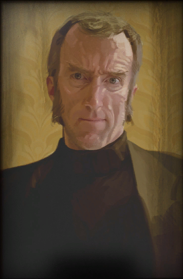

Cave Johnson

Background
Cave Johnson is the former CEO of Aperture Science and the main antagonist of Portal 2. He is a charismatic and ambitious businessman who founded the company and played a significant role in its development. Johnson is known for his eccentric personality and his obsession with innovation and success. His actions and decisions have far-reaching consequences for the characters and the world of Portal.
Appearances
- Portal 2 (2011)
Abilities
Cave Johnson possesses strong leadership skills and a deep understanding of science and technology. His ability to inspire and motivate others has made him a successful entrepreneur. Additionally, his experience in managing large-scale projects has equipped him with the knowledge to navigate complex situations.
Personality
Cave Johnson is characterized by his confidence, ambition, and unconventional approach to business. He is known for his bold decisions and his willingness to take risks. Despite his flaws, he is a compelling character whose story adds depth to the narrative of Portal 2.